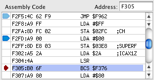
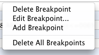
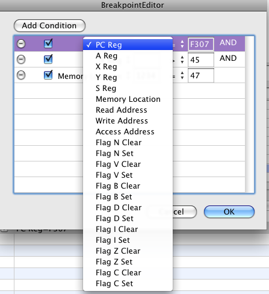
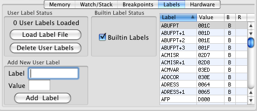
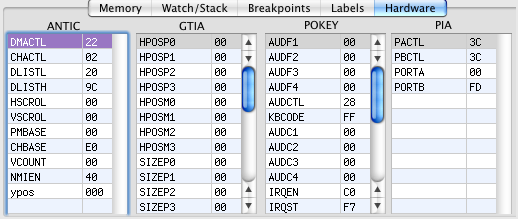

The Graphical Debugger on the Atari800MacX emulator allows you to debug
programs written for the Atari800 on the emulator. With it you
can single step programs, display memory, set breakpoints, and much,
much more. The debugger has the command line Debug Monitor at the top, followed by
displays of the CPU Registers, Assembly Code listing, Stepping buttons,
and a tabbed interface which can display memory, watchpoints, stack
trace, breakpoints, label management, and hardware registers.
CPU
Registers
The CPU register display displays each of the CPU registers, and breaks
the P register out into the flags contained within it. If the
register has changed since the last time the display has been updated,
the registers will be displayed in red. In the above example, the
PC, A, and P registers have changed, as well as the C flag.
Assembly Code

The assembly code display shows the disassembled code around the
current program counter. The current location of the program
counter is indicated by the small red arrow on the left column of the
display. The other two indicators in that column in the above
picture are indicators for breakpoints. The light blue breakpoint
is disabled, while the one that is dark blue is enabled. A new
breakpoint may be created by left clicking in this left column on a row
where no breakpoint exists. If a breakpoint does exist, clicking
in this column with enable/disable it.
The address of the memory disassembly may be changed by entering either a hex address or a label name in the Address: field.
In addition, right clicking in the assembly language area will produce the following menu:
There are 5 options in the menu. The Run To Here.. menu option
sets a temporary breakpoint at the selected line and restarts the
emulator. (Note for those using the command line monitor, this
uses the simple "BREAK" breakpoint from the monitor).
If there is is a breakpoint on the line that is right clicked, three
options to manage that breakpoint are available. First, the
breakpoint may be deleted. If it is enabled, it may be disabled,
or if it is disabled, it may be enabled. Finally, the breakpoint
may be edited using the Breakpoint Editor. If there is no
breakpoint on the line that is clicked, a breakpoint may be added.
Stepping Buttons
These four buttons allow the user to control program execution.
The GO button causes program execution to continue, exiting the
debugger (this has the same function as the monitor "CONT" command).
The STEP button is used to execute the next instruction, and return to
the debugger. This is also known as step into, as it will follow
a JSR instruction. It works the same as the "G" command in the
monitor.
The OVER button is used to execute a step over. It works the same
as the STEP button for most instructions, but it will step over JSR
instructions, stopping after the CPU returns from executing the
subroutine that is called. This works the same as the "O" command
in the monitor. (Note, this also uses the temporary breakpoint
that is used by the Run to Here command).
The OUT button is used to step out of a subroutine. It will
execute until a RTS instruction. It works the same as the "R"
command from the monitor.
Memory Display
The memory display shows 128 bytes at a time of the Atari memory
map. The starting memory address that is displayed may be changed
by entering a value in the Address: field. You may enter a hex
address or a label value in this field. The memory address can
also by changed by the stepper control next to the address field. It
will move the address by 0x10 or 16 bytes up or down. In the
right column, the ASCII values of the memory locations in each row are
displayed. The value of memory locations may be changed by left
clicking on a location and entering the new hex value. If a memory
value has changed since the last debugger update, it will be displayed
in Red.
Memory may be searched by entering a string of values to search for
into the Find field. For example to search for a sequence of
three bytes valued 0x01, 0x02, and 0x03, you would enter "01 02 03"
into the field. Then pressing the First button, will find the
first occurrence of this sequence in memory, moving the memory window
starting address if needed. The sequence will be highlighted in
inverse text. Pressing Next will move to the next occurrence of
the sequence, until the last occurrence is found (which will be
indicated by a system beep).
Finally, right clicking on a memory location in the table will bring up the following menu:
This may be used to add a Watchpoint for the address, either 8 or 16 bits. Watches are explained in the next section.
Watchpoints/Stack Display
On the right side of this tab, the stack trace is displayed, showing
the return locations for subroutines, and the associated subroutine
call.
The left side of the window shows the current watchpoints, these
are Atari memory locations that are read and displayed after every
debugger update. There are four columns in the display. The
Expression column is where the user enters the memory address to be
watched. This may be either a hex address or a Label name.
The address column displays the hex address being watched. The
Value column displays the value at the Watch address, either a 8 bit or
16 bit value. The format of the Value column may be changed using
a right click menu. This same menu is also used to create a new
Watch line in the table:
When a Watch is added with this menu, it is added with an Expression
value of "----" which must be edited to the desired address.
The next menu items allow the user to select if the Watch point is a
Byte (8 bits) or a Word (16 bits). The following menu items allow
the user to select the format of the watch display, as either signed or
unsigned decimal, hex, or ASCII characters.
Finally, the final items allow you manage memory breakpoints at the
watch location. You can set a breakpoint that will fire when the
location is read, written, or accessed (either read or written).
Or, you can set a breakpoint when the watch value is equal to a certain
value. When this option is chosen, and small window is opened to
allow the user to enter the value.
Breakpoints
This display shows the current breakpoints set in the emulator.
The first two breakpoints listed are the PC breakpoints which we saw
earlier in the assembly language display. The second column
checkbox shows if the breakpoint is enabled or disabled. The third
column shows the value of the breakpoint. In addition to PC and
memory breakpoints, other register values may be used to qualify the
breakpoint. All of the conditions listed in the third column must
be true for the breakpoint to fire. Therefore, the third
breakpoint will fire if either memory address 0x68 or 0x69 is
accessed. This is the memory watch breakpoint we saw set on the
second watch in the above description of watches.
Right clicking in the Breakpoint table will bring up the breakpoint
menu which allows the user to delete a breakpoint, edit it in the
Breakpoint editor, or add a new breakpoint. The final menu item
allows the user to delete all breakpoints. Double clicking on a breakpoint will also bring up the Breakpoint editor.

Breakpoint Editor
The breakpoint editor allows you to add conditions to a breakpoint,
delete conditions, enable/disable conditions, or add new conditions to
a breakpoint. The '-' button next to each condition is used to
delete a condition. The Add condition button is used to add a new
condition. The checkbox next to each condition is used to enable
or disable a condition. All enabled conditions must be true for a
breakpoint to fire. (Note, also in the main breakpoint window,
disabled conditions will appear in gray text, while enabled conditions
will appear in black text.). The first text field in each
condition is only used for Memory Location conditions to specify the
address of the memory location. The second text field is used to
specify the value of the memory location for a memory location
condition, the value of a register for a register condition, or the
memory address for a read, write, or access condition. Neither
text field is used for a flag condition.
Clicking on the type of condition will bring up the following Popup menu, which allows you to chose the type of condition:

You can chose to break on the value of one of the registers, one of the
flags, the value of a memory location, or a read, write, or access of a
memory location.
Clicking on the type of comparison will bring up the following Popup menu:
You can chose an equal, not equal, less than, greater than, less than
or equal, or greater than equal comparison for the Breakpoint.
Setting breakpoints in the assembly language table or the Watch table
uses a small percentage of the capabilities of the Breakpoint table
which is fully described in the Debug Monitor command line
description. However, they provide a much easier
interface. Also, the user must be careful, as they can specify
conditions that cause a breakpoint to occur all of the time (for
example, PC Reg >= 0), which may cause the debugger to break after
every instruction.
Labels

This display allows the user to manage builtin and user labels.
Builtin labels are well known memory locations and hardware registers
in the Atari. There are two different sets of these, one for
Atari 800 class machines, and one for the Atari 5200. Builtin
labels may be enabled or disabled using the checkbox in the middle.
The user is also able to define labels. One way to do this is by
entering a label and value and pressing the Add Label button. The
second way is to use the "Load Label File" button to load a file with
label definitions. These are output by most Atari
assemblers. Several files may be loaded, and the labels will be
added. If the user wants to have only labels from one file, the
Delete User Labels button should be used before the Load Label File
button.
The table at the right of the display shows the currently defined
labels. The table may be sorted on any field by clicking on the
header of that column (in either ascending or descending order).
The third column 'B' contains a B if it is a Builtin label, and an U if
it is a User label. The fourth contains a R or W for those
builtin locations which have different names for reads and
writes. A 'W' in this column indicates the label is for write
label, a 'R" is in the column for a read label.
Hardware

This display shows the contents of 4 of the hardware chips in the
Atari. Like memory and register values, if they have changed
since the last debugger update, the register value will be displayed in
Red. The register values may also be edited, but be aware, that
not all bits of a register may change, as they may not be writable, and
there may be other side effects from changing these registers.